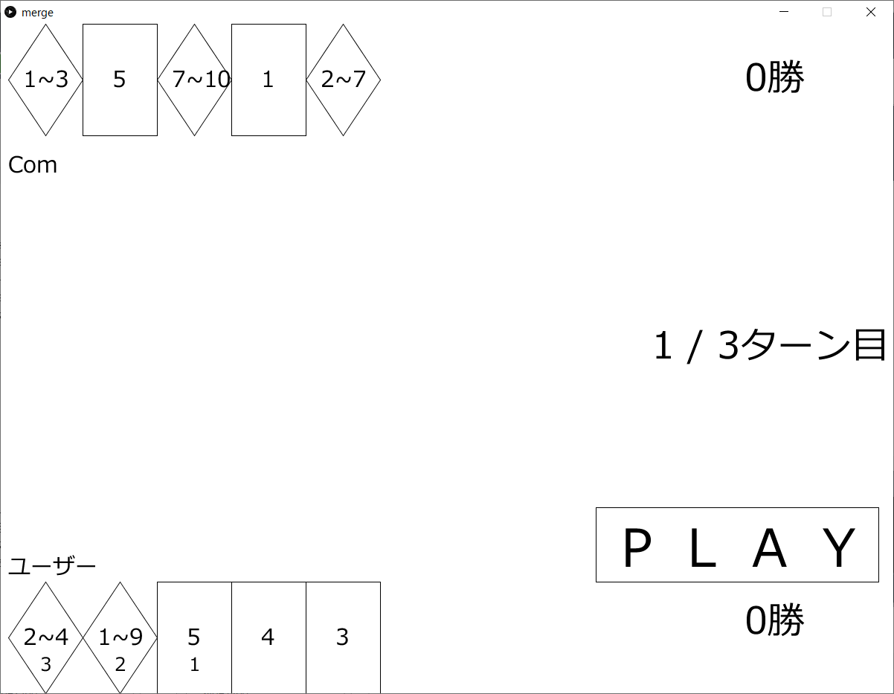

-
ボール内をクリックしながら引っ張って,離すとボールを発射します.
引く度合いが大きくなる程,
ボールの速度が上昇し, ボールの色が白から黒へ変化していきます.
-
一定以上の速度を超えるとボールの色が黄色に変わり,
障害物(壁,床)を壊す事ができます.またステージの背景色は, ゴールに近づくにつれて変化していきます.
-
旗の上で止まることができたら,ゴールです.

まずタイトル画面が表示される。エンターキーを押すとゲームがスタートして、Qキーを押せばコンフィグモード（手札・ターン数の設定）に入る。
エンターキーを押すと、ゲームが始まる。自分の手札は画面の下側にあるので、それをクリックして手札を選ぶ。規定枚数選ぶと灰色で「PLAY」と表示されていた文字が黒色に変わるので、それをクリックする。
クリックをすると、自分と相手の手札の比較が始まり、勝った回数が多い方が、このターンの勝者となり一点を獲得する。全てのターンが終わっていない時に「NEXT」をクリックすると、次のターンに移る。終わっている時は最終結果画面に移る。

最終的により多くの点数を獲得した方が今回のゲームの勝者となる。エンターキーを押すとタイトル画面に戻る。
タイトル画面でQキーを押すと設定モードに移り、設定画面が表示される。上から手札の枚数、プレイするターン数、乱数の下限値、乱数の上限値を管理する項目が表示されている。左右のボタンをクリックすれば数値を変える事が出来る。設定を変更した後のゲーム画面の例が以下の画像である。